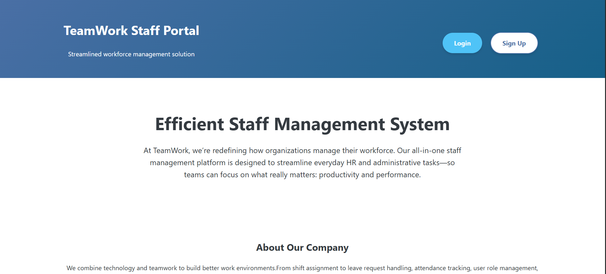
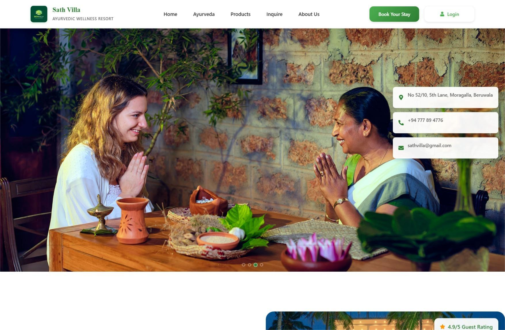
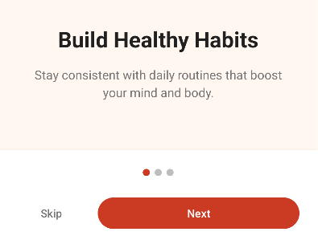
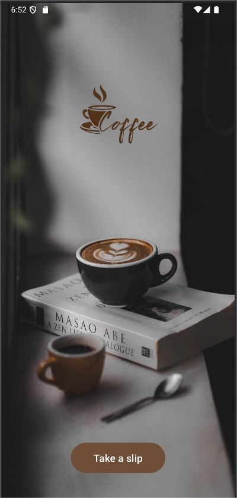

 Staff Management System A mobile app for task management with offline support. Built core features and synchronized with a backend when online. Java · MySQL · Servlet · Tomcat · MVC Code Live
 Ayurveda Hotel Management System A lightweight dashboard and analytics tool to track performance metrics. I worked on front-end visualizations and API integration. React · Node.js · Express · MongoDB Code Live
 Habit Tracker Mobile Application An Android application to help users maintain and improve their daily personal wellness routines. Kotlin · Java · Android Studio Code Live
 Coffee Shop Mobile Application A restaurant mobile app with fully designed frontend—menu, item details, cart, and restaurant info. Kotlin · Java · Android Studio Code Live